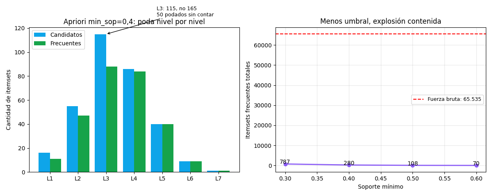

Bloque G · Frequent Itemsets · Lección 0041 · mié 18 nov
El algoritmo Apriori: generar, podar, contar — nivel por nivel
Win de hoy: 65.535 combos posibles → Apriori cuenta solo 825 candidatos (min_sop = 0,3) y encuentra 787 frecuentes: la poda por monotonicidad hace el 99 % del trabajo.
1 · La idea en 3 pasos (que se repiten)
Apriori (Agrawal & Srikant, 1994) sube de nivel: con los frecuentes de tamaño k arma candidatos de tamaño k+1, poda los que tienen un subconjunto infrecuente (lección 0039 (mar 17): si {CD, llantas} falla, {CD, llantas, techo} ni se cuenta) y cuenta solo los sobrevivientes. Cuando un nivel da vacío, termina: ningún nivel superior puede tener nada. Esta garantía («todo subconjunto de un frecuente es frecuente») se conoce como propiedad de cierre a la baja.
2 · Apriori corriendo sobre los 16 extras (min_sop = 0,4)

Lectura: (1) L1 arranca con 16 candidatos y deja 11; L7 termina con 1 combo de 7 extras. Total: 280 frecuentes en 7 niveles. (2) El umbral es la perilla del costo: min_sop = 0,3 cuenta 825 candidatos; un súper real con miles de ítems y umbral bajo es intratable — por eso existen FP-Growth (0052, mié 18) y muestreo.
Regenerar la figura (mismo resultado versionado en assets/img/toyota/):
python3 scripts/make_figures.py --only algoritmo-apriori3 · Mini-Apriori en 20 líneas (puro pandas, sin librerías raras)
import pandas as pd, itertools
E = ["ABS","Airbag_1","Airbag_2","Airco","Backseat_Divider",
"BOVAG_Guarantee","Boardcomputer","CD_Player","Central_Lock",
"Met_Color","Mfr_Guarantee","Mistlamps","Power_Steering",
"Powered_Windows","Sport_Model","Tow_Bar"]
B = pd.read_csv("../ToyotaCorolla.csv")[E]
MIN_SOP = 0.4
cur = {frozenset([a]) for a in E if B[a].mean() >= MIN_SOP}
print("L1:", len(cur)) # 11
k = 2
while cur:
cands = {u for i, A in enumerate(sorted(cur, key=sorted))
for A2 in sorted(cur, key=sorted)[i+1:]
for u in [A | A2] if len(u) == k
and all(frozenset(s) in cur
for s in itertools.combinations(u, k-1))}
cur = {c for c in cands if B[list(c)].all(axis=1).mean() >= MIN_SOP}
if cur: print(f"L{k}: {len(cands)} candidatos -> {len(cur)} frecuentes")
k += 1
# L2: 55 -> 47 · L3: 115 -> 88 · … · L7: 1 -> 1 (total 280)Tu turno: cambiá MIN_SOP a 0,3 y 0,6 y verificá los totales 787 y 70 de la Fig. 1.
Luego generá reglas de un frecuente L3 con la función de la
lección 0040 (mar 17) y ordenalas por lift.
4 · Cierre Bloque G (17–18 nov)
Recap del bloque hasta acá:
- 0039 (mar 17): cada auto es un changuito de 16 extras; el soporte mide cuán común es cada combo y la monotonicidad (agregar ítems nunca suma soporte) permite podar.
- 0040 (mar 17): la confianza miente cuando B es común; el lift ordena los hallazgos (CD → computadora, ×2,43).
- 0041 (hoy, mié 18): Apriori sube nivel por nivel generando y podando — 825 candidatos contados, 787 frecuentes con min_sop = 0,3 (280 con min_sop = 0,4).
Pero falta una pieza: Apriori genera candidatos y re-barre el dataset en cada nivel. 0052 (mié 18) cierra el bloque con FP-Growth y ECLAT: mismos frecuentes, sin candidatos y sin re-barridos.
5 · Quiz (auto-chequeo inmediato)
6 · Fuente primaria y cierre
Para profundizar (1 fuente): Agrawal & Srikant (1994), Fast Algorithms for Mining Association Rules (VLDB). Más contexto en RESOURCES.
Cierre Bloque G (17–18 nov): changuitos (0039) → reglas (0040) → Apriori (hoy) → FP-Growth/ECLAT (0052). Siguiente (orden Bloque G): 0052 · FP-Growth y ECLAT (mié 18): sin candidatos, sin re-barridos.